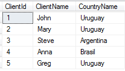

Sample Suppose you have the following transaction
Client
{
ClientId*
ClientName
CountryName
}
And the corresponing table has these records  The reorganization consists in creating a new transaction Country, and adding the Foreign Key CountryId to the Client Transaction:
Client
{
ClientId*
ClientName
CountryId
CountryName
}
Country
{
CountryId*
CountryName
}
After running this reorganization, the table Country is loaded with the country names referenced in table Client, and in the Client Table, the corresponding CountryId is added:
AvailabilityThis feature is available as of GeneXus Tilo Beta 1.
|